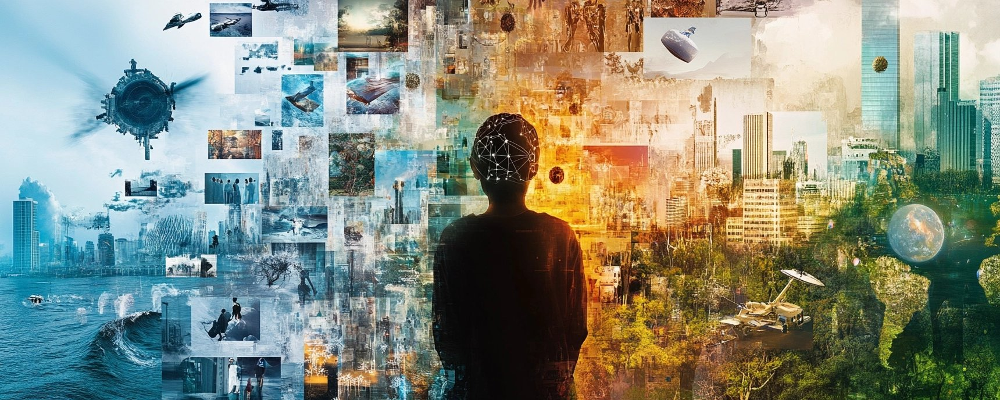

Next 100 Global Issues
Now that the original 100 global problems—such as climate change, poverty, and inequality—have been solved, humanity has entered a new era of stability and prosperity. However, progress is never without its challenges. Solving those initial issues has paved the way for a new set of complex problems, reflecting the consequences of advanced technology, shifting social dynamics, and our expansion into new frontiers. Below is a list of the top 100 problems facing this transformed world, organized by category, with brief descriptions. These aren’t setbacks—they’re the next steps in our journey, offering opportunities for innovation and collaboration.
Technological Challenges
Advanced technology solved many original problems, but it’s also created new ethical and practical dilemmas.
- AI Governance and Ethics – Ensuring advanced AI is used responsibly, avoiding harm in areas like surveillance or autonomous decision-making.
- Quantum Computing Security – Protecting data from quantum computers that could crack current encryption systems.
- Genetic Engineering Regulation – Managing ethical issues like designer babies or ecological risks from gene-editing tech.
- Virtual Reality Addiction – Addressing psychological dependency on immersive digital worlds.
- Digital Identity Theft – Combating advanced identity fraud in a hyper-connected society.
- Automation-Induced Job Displacement – Mitigating the impact of widespread automation on employment.
- Cybersecurity in a Post-Quantum World – Developing defenses against quantum-powered cyberattacks.
- Ethical Use of Brain-Computer Interfaces – Protecting privacy and autonomy in technologies linking brains to machines.
- Space Traffic Management – Preventing collisions in crowded orbital space as satellite launches increase.
- Digital Privacy Erosion – Safeguarding personal data in a world of pervasive surveillance.
Social and Cultural Challenges
With basic needs met, new social issues arise from abundance and connectivity.
- Cultural Homogenization – Preserving diversity as global influences dominate local traditions.
- Mental Health in a Post-Scarcity Society – Helping people find purpose when material struggles are gone.
- Ethical Consumption Overload – Ensuring sustainable consumption despite abundant resources.
- Global Citizenship vs. National Identity – Balancing a unified world with regional uniqueness.
- Social Media Echo Chambers – Reducing division caused by algorithm-driven content.
- Reproductive Rights in a Population-Controlled World – Navigating family planning ethics in managed populations.
- Intergenerational Equity – Sharing progress fairly across generations.
- Digital Divide 2.0 – Closing gaps in access to advanced tech like quantum computing.
- Education for a Hyper-Advanced Workforce – Preparing people for creative and technical roles in a new economy.
- Ethical Tourism in Fragile Ecosystems – Managing tourism’s impact on restored natural areas.
Environmental and Resource Challenges
Sustainability is achieved, but new frontiers and maintenance pose issues.
- Orbital Debris Cleanup – Clearing space junk for safe exploration.
- Deep-Sea Ecosystem Protection – Safeguarding oceans from overexploitation.
- Geoengineering Side Effects – Handling unintended consequences of climate fixes.
- Biodiversity in Engineered Ecosystems – Maintaining diversity in restored or synthetic habitats.
- Resource Allocation in Space Colonies – Distributing essentials like water in off-world settlements.
- Carbon Sequestration Leakage – Preventing stored carbon from escaping.
- Sustainable Mining of Asteroids – Regulating space resource extraction.
- Water Management in Mega-Cities – Ensuring equitable water access in urban hubs.
- Ecological Impact of Vertical Farming – Balancing urban farming’s energy use.
- Wildlife Adaptation to Restored Habitats – Helping species adjust to rapid ecosystem changes.
Economic and Governance Challenges
Prosperity requires new systems to manage wealth and cooperation.
- Universal Basic Income (UBI) Inflation – Preventing economic issues from widespread UBI.
- Intellectual Property in a Hyper-Innovative World – Balancing idea protection with collaboration.
- Global Tax Harmonization – Creating fair cross-border tax systems.
- Automation Taxation – Taxing AI and robotics to redistribute wealth.
- Economic Transition for Fossil Fuel Workers – Supporting workers from phased-out industries.
- Ethical Investment in Emerging Technologies – Prioritizing socially beneficial tech funding.
- Decentralized Governance – Managing blockchain-based governance shifts.
- Global Trade in a Post-Scarcity Economy – Redefining trade with abundant resources.
- Labor Rights for Gig and Remote Workers – Protecting flexible workers’ rights.
- Economic Incentives for Long-Term Thinking – Promoting sustainability over short-term gains.
Health and Well-Being Challenges
Health advances bring new ethical and quality-of-life concerns.
- Ethical Dilemmas in Life Extension – Managing impacts of longer lifespans.
- Mental Health in Hyper-Connected Societies – Addressing digital overload and isolation.
- Gene Editing for Non-Medical Enhancement – Regulating enhancements beyond health.
- Pandemic Preparedness in a Globalized World – Staying ready for new pathogens.
- Holistic Health in Aging Populations – Ensuring quality of life with longer lives.
- Ethical Use of Nanomedicine – Balancing risks and benefits of nanotech in healthcare.
- Global Mental Health Parity – Prioritizing mental health access globally.
- Nutrition in a World of Synthetic Foods – Ensuring lab-grown food meets dietary needs.
- Sleep Health in 24/7 Societies – Promoting rest in non-stop cultures.
- Ethical Organ and Tissue Engineering – Managing lab-grown organ distribution.
Ethical and Philosophical Challenges
Abundance raises deep questions about purpose and morality.
- Purpose and Meaning in a Post-Work Society – Finding fulfillment without traditional jobs.
- Ethical AI Decision-Making – Ensuring AI decisions are fair and transparent.
- Moral Implications of Human Augmentation – Debating ethics of tech-enhanced humans.
- Existential Risks from Advanced Technologies – Mitigating threats from AI or biotech misuse.
- Philosophical Debates on Consciousness and AI – Addressing AI consciousness and rights.
- Ethical Space Colonization – Respecting potential extraterrestrial life.
- Moral Responsibility in a Hyper-Abundant World – Defining duties without scarcity.
- Global Consensus on Ethical Norms – Agreeing on universal standards.
- Intergenerational Justice in Long-Term Projects – Protecting future generations from today’s choices.
- Philosophical Education for a Complex World – Teaching ethics for tech-driven dilemmas.
Space and Exploration Challenges
Expanding beyond Earth introduces unique problems.
- Interplanetary Resource Rights – Allocating planetary resources fairly.
- Space Colonization Governance – Creating laws for off-world communities.
- Ethical Treatment of Extraterrestrial Life – Preparing for life beyond Earth.
- Long-Term Health in Low-Gravity Environments – Addressing space living’s health impacts.
- Space Tourism Regulation – Ensuring sustainable space travel.
- Interstellar Communication Delays – Managing deep-space communication lags.
- Space Debris in Interstellar Travel – Avoiding collisions on long missions.
- Cultural Exchange with Extraterrestrial Civilizations – Preparing for alien contact.
- Ethical Terraforming – Debating planetary alteration ethics.
- Space-Based Energy Systems – Managing space energy harvesting risks.
Global Governance and Security Challenges
Peace requires ongoing effort and adaptation.
- Global Cybersecurity Standards – Harmonizing digital defenses.
- Ethical Use of Surveillance for Security – Balancing safety and privacy.
- Dispute Resolution in a Borderless World – Resolving conflicts in a global society.
- Global Governance of Autonomous Weapons – Preventing AI weapon misuse.
- Ethical Espionage in a Transparent World – Maintaining trust with open info.
- Managing Global Migration in Space Colonies – Ensuring fair off-world migration.
- Preventing Digital Authoritarianism – Stopping tech-based control.
- Global Disaster Response Coordination – Enhancing disaster readiness.
- Ethical Data Ownership – Defining data control rights.
- Preventing Technological Monopolies – Avoiding dominance in key tech fields.
Educational and Workforce Challenges
Work and learning must evolve with the times.
- Lifelong Learning in a Fast-Paced World – Supporting continuous education.
- Ethical Use of AI in Education – Enhancing learning without overreach.
- Workforce Adaptation to Brain-Computer Interfaces – Preparing for neural tech jobs.
- Balancing Automation with Human Employment – Complementing human work with tech.
- Global Standardization of Education – Harmonizing education globally.
- Mental Resilience Training – Building resilience for change.
- Ethical Mentorship in AI-Driven Learning – Ensuring AI mentors guide ethically.
- Access to Advanced Education Technologies – Bridging tech access gaps.
- Work-Life Integration in a 24/7 Economy – Maintaining balance in a blurred world.
- Ethical Career Pathing in a Post-Work Society – Guiding meaningful pursuits.
Miscellaneous and Emerging Challenges
These wild cards could shape the future.
- Ethical Use of Time Travel (Theoretical) – Addressing time travel’s implications.
- Managing Global Fame and Influence – Handling viral fame’s impact.
- Preventing Digital Addiction – Combating tech overuse.
- Ethical Cloning and Replication – Regulating cloning tech.
- Global Language Evolution – Managing linguistic shifts.
- Preventing Technological Stagnation – Keeping innovation alive.
- Ethical Use of Memory Editing – Handling memory alteration tech.
- Managing Global Time Zones in a Digital World – Streamlining global coordination.
- Preventing Over-Reliance on AI – Maintaining human autonomy.
- Ethical Exploration of Alternate Dimensions (Theoretical) – Preparing for multiverse possibilities.
Solve anything. Evolve everything.